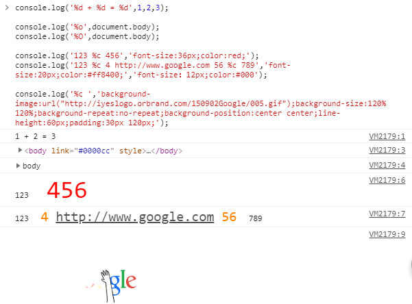

//基本用法
console.log('最常见用法\n换行');
console.error('输出错误信息 会以红色显示');
console.warn('打印警告信息 会以黄色显示');
console.info('打印一般信息');
console.clear();//清空上面的console显示//进阶用法
console.assert(false,'判断为false才显示的信息');//console.assert(bool,”info”) 如果bool为false 打印出info 否则不打印
console.table([['中国','美国'],['好']]);//传入的对象或数组以表格方式显示
function fn(){ console.trace(); }//打印 调用链 fn2()调用fn1()，fn1()调用fn()
function fn1(){ fn(); }
function fn2(){ fn1(); }
fn2();
//格式化输出
console.log('%d + %d = %d',1,2,3);
//%o%O打印dom节点时就不一样
console.log('%o',document.body);
console.log('%O',document.body);
// %c 后面的内容，增加css样式
//附：console.log输出的超链接会被自动识别并加上灰色字体颜色和下划线的样式，而这个无法用%c覆盖
console.log('123 %c 456','font-size:36px;color:red;');
console.log('123 %c 4 http://www.google.com 56 %c 789','font-size:20px;color:#ff8400;','font-size：12px;color:#000');
//利用css样式加载图片 //没法直接设置width和height样式,line-height图片高度,再调padding
console.log('%c ','background-image:url("http://iyeslogo.orbrand.com/150902Google/005.gif");background-size:120% 120%;background-repeat:no-repeat;background-position:center center;line-height:60px;padding:30px 120px;');
//高级用法
//计时，单位毫秒
console.time();
for(var i=0;i<100000;i++){
var j=i*i;
}
console.timeEnd();
//统计代码或函数被调用了多少次
var fn_ = function(){ console.count('hello world'); }
for(var i=0;i<5;i++){
fn_();
}
//查看内存使用情况，是属性，不带括号
//console.memory;
//在浏览器开发者工具中使用
//分组输出，可嵌套
console.group('分组1');
console.log('语文');
console.log('数学');
console.group('其他科目');
console.log('化学');
console.log('地理');
console.log('历史');
console.groupEnd('其他科目');
console.groupEnd('分组1');